Preserving Indian Tradition Through Art
Where Tradition Meets Your Hands
Regular Classes • Festival Workshops • Handmade Creations
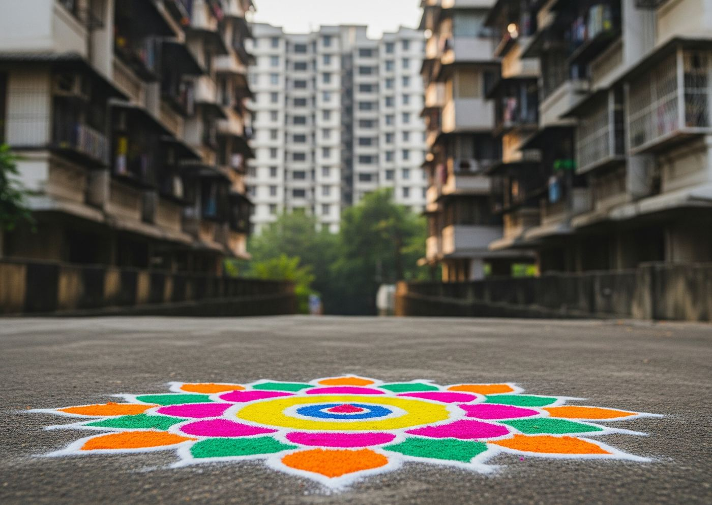
Close your eyes for a moment. Remember the smell of fresh rangoli powder on a Diwali morning, the sound of neighbors calling out to admire the design at your doorstep, the quiet pride of watching your mother or grandmother's fingers move in perfect rhythm — colors appearing like magic on the ground. Mumbai's chawls once came alive with this every festival season.
The chawls may have grown into towers, the open aangans into compact flats and society lobbies — but rangoli was never about how much space you have. It was always about what you create in the space you have. A small square outside your door, a corner of your balcony, the entrance of your building lobby — the art adapts to you, not the other way around.
There's a reason rangoli has greeted doorsteps for generations — long before it was art, it was a welcome. A way of saying: something good is meant to happen here today. Sanskar Kala was created to carry that feeling into every home, one design at a time.
We believe Rangoli is not just decoration — it is culture, creativity and celebration. Every session blends cultural authenticity with genuinely enjoyable, easy-to-follow teaching — the warmth of a neighbourhood art circle, brought into a structured class open to all ages 12 and up.
Two different ways to learn — pick what fits your rhythm.
Structured, in-person classes running continuously at Vikhroli — for anyone who wants to reconnect with this craft, whether picking up a rangoli cone for the first time or refining childhood skills.
Special sessions timed around festivals — focused on seasonal designs and techniques, open to students and newcomers alike, held across Mumbai, Thane, and Navi Mumbai.
Signature 5-Day Immersive Workshop — a deeper, dedicated experience for groups of 15 or more, hosted at a venue arranged by you (society hall, office, or community space). Perfect for RWAs, corporate teams, and community groups wanting an exclusive, full-batch experience led entirely for your group.
Every colour here carries a mood — a festival morning, a quiet corner, a street brought alive.
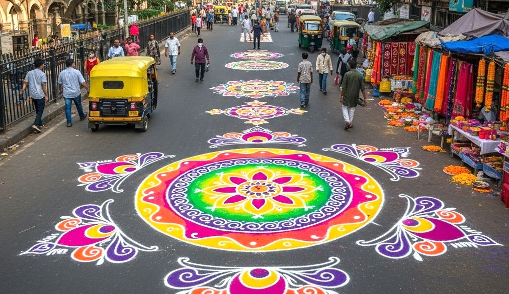
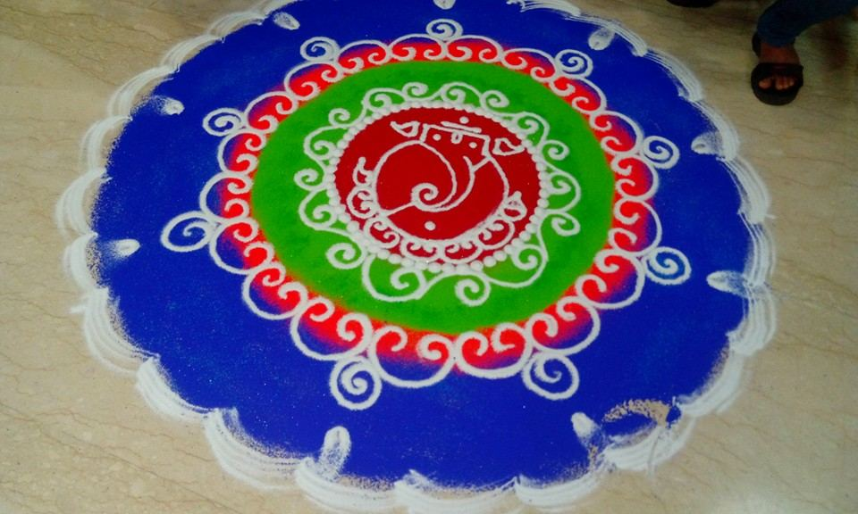
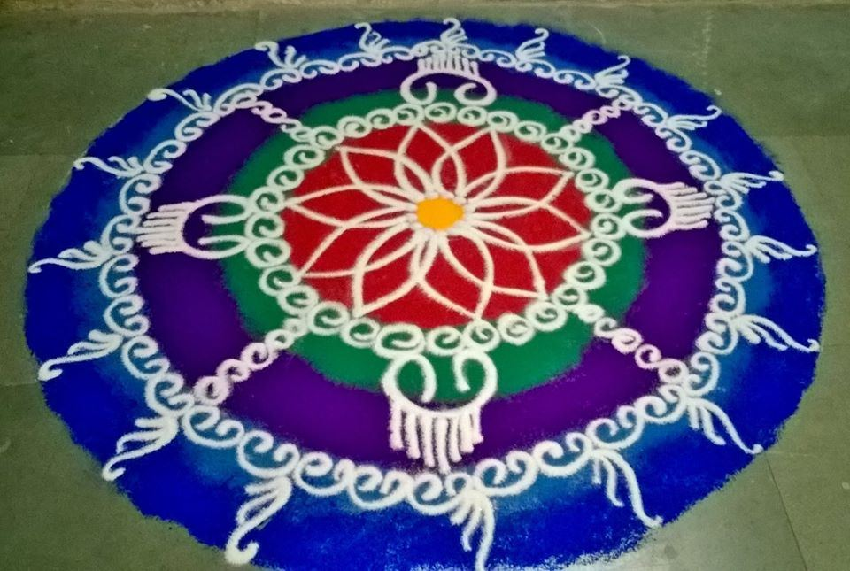
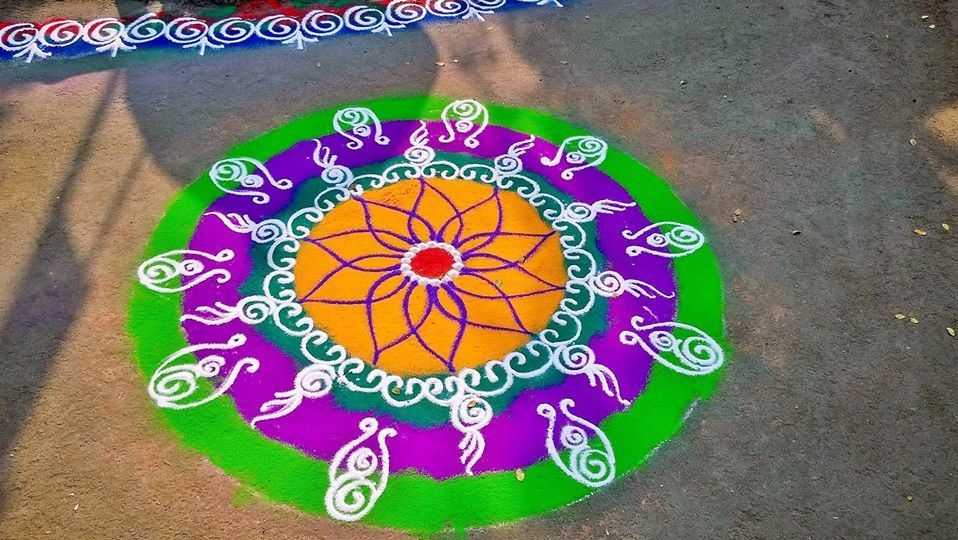
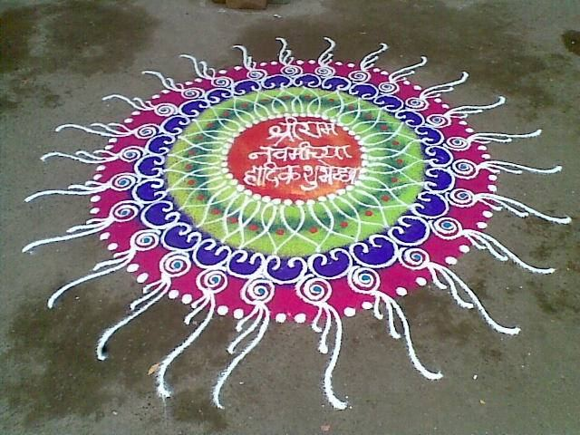
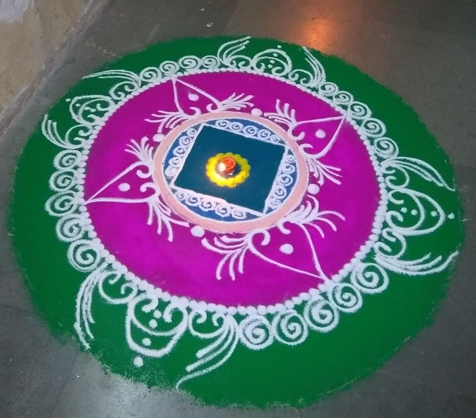
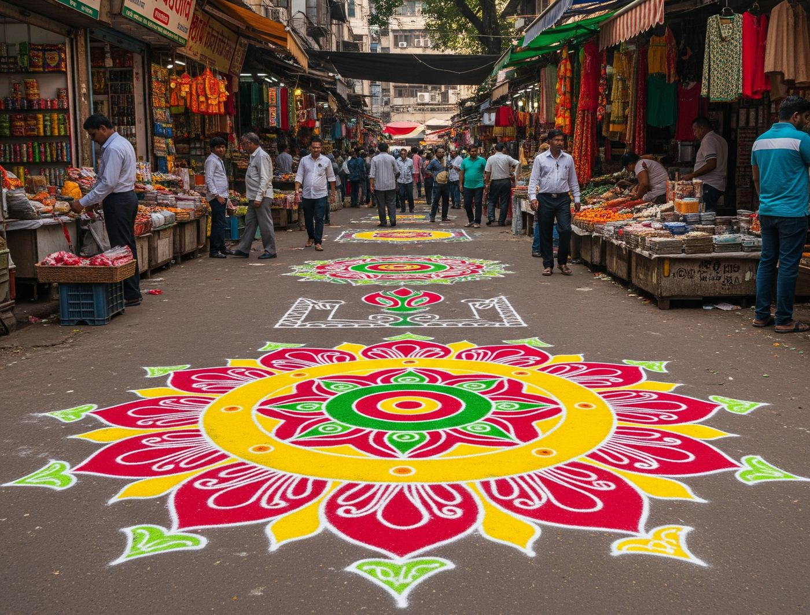
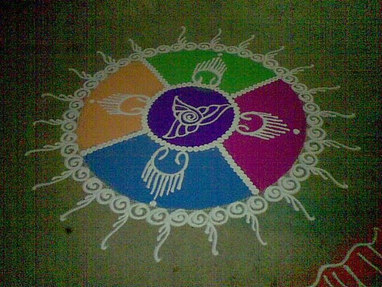
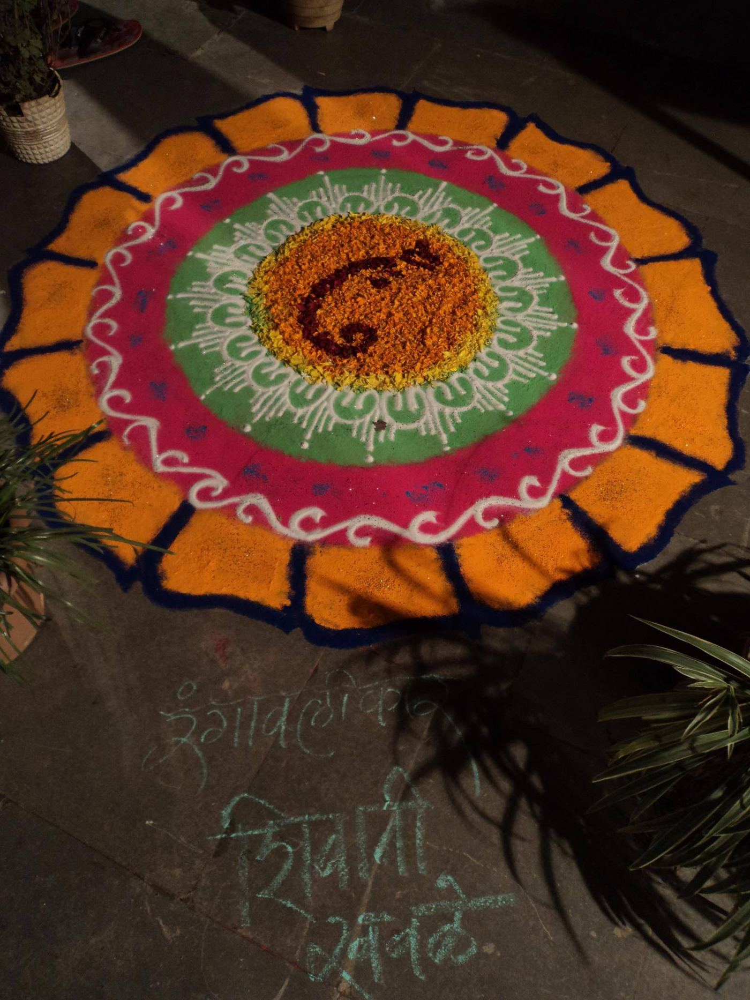
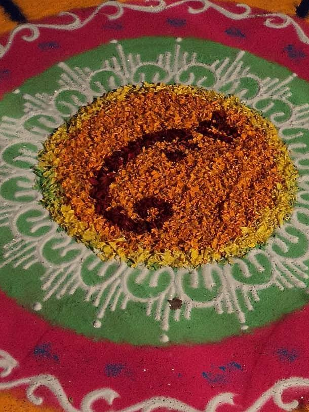
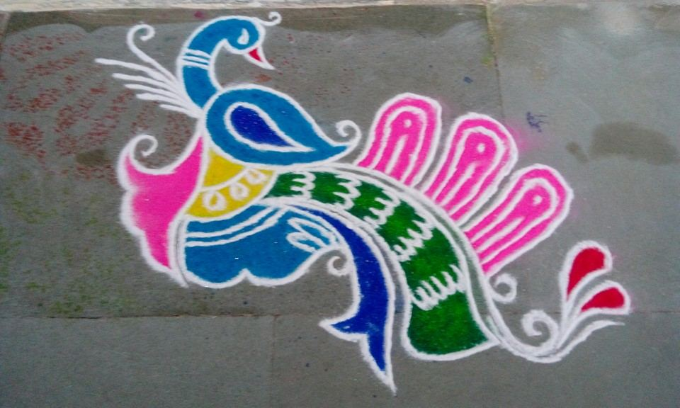
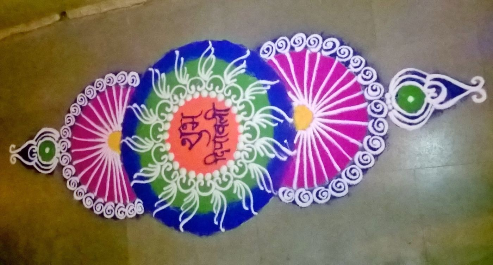
Warm yellows and oranges read as welcome and celebration — the same tones as festival marigolds, they put people at ease before a word is said.
Rich golds and warm pinks carry festivity — associated with joy and togetherness, they draw the eye and lift the mood of a space instantly.
A grounding, calm backdrop — navy lets the brighter colours around it feel even more vivid, the way a night sky makes diyas glow brighter.
Green signals growth and freshness — a quiet reminder that this craft, like a garden, is tended and renewed every season.
Beautiful rangoli colours, tools, and gift boxes inspired by Indian tradition.
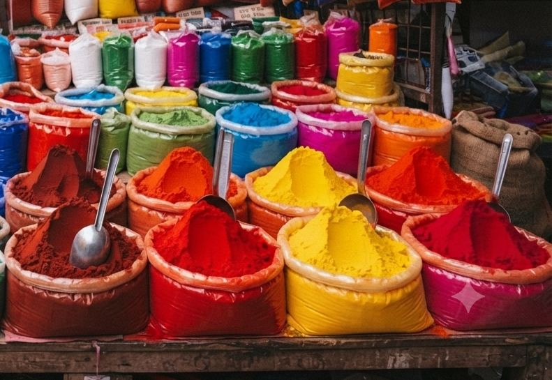
Rich, vivid powders in every festive shade — the same colours you see in our finished designs.
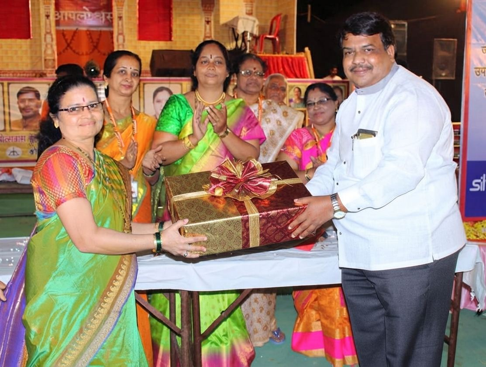
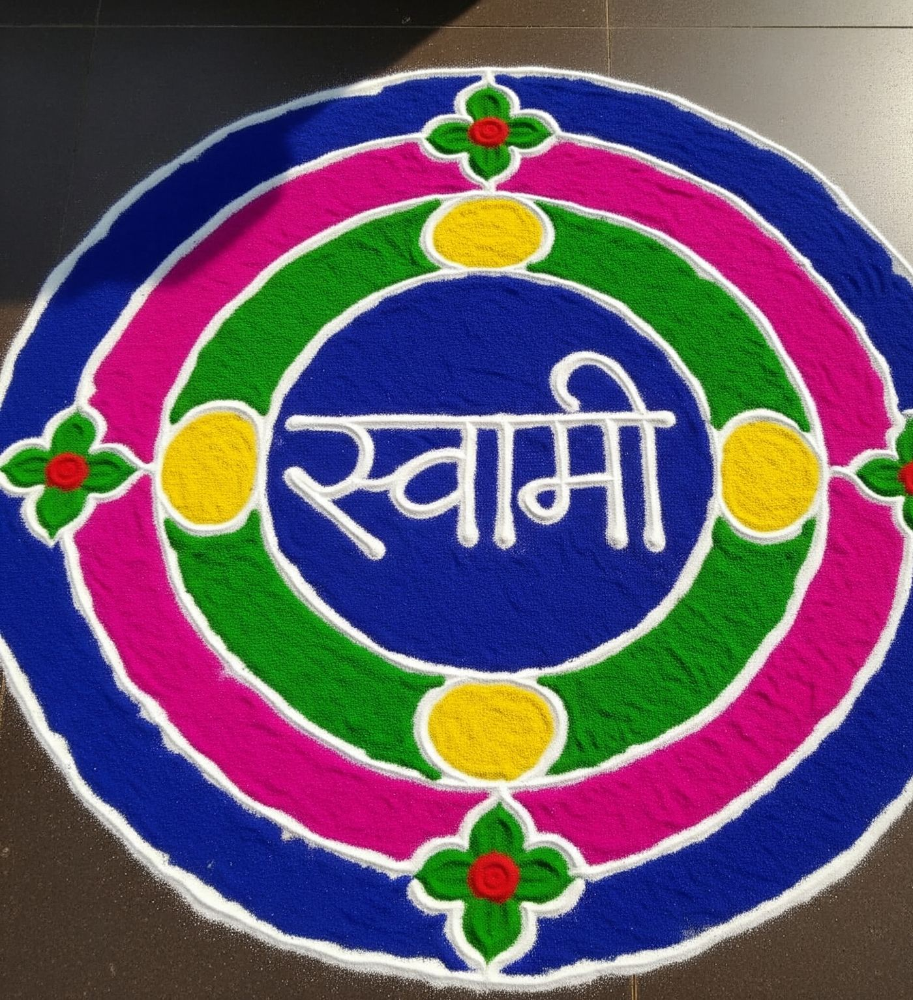
Outline guides and cones for cleaner lines and symmetric patterns — for beginners and steady hands alike.
Regular classes are held at our Vikhroli. Festive workshops travel to you — held across these neighbourhoods in Mumbai, Thane, and Navi Mumbai.
Join a regular class this week, or catch our next festive workshop — either way, let your hands remember what your heart never forgot.
Get in Touch